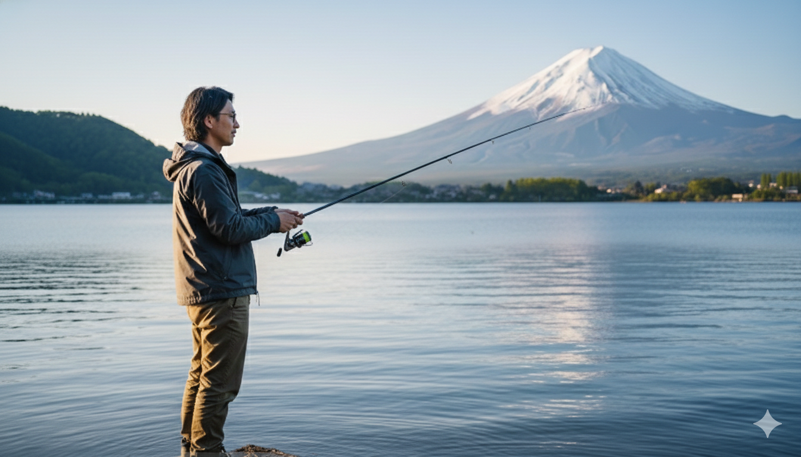

ABOUT
30代男性、映像職人。元ポストプロダクションでの厳格な技術習得を経て、現在は大手YouTubeチャンネルの運営ディレクターを務めています。
単なる「カットとつなぎ」ではなく、視聴者のエンゲージメントを最大化させる「ストーリーテリング」と「心理的演出」が最大の強みです。

30代男性、映像職人。元ポストプロダクションでの厳格な技術習得を経て、現在は大手YouTubeチャンネルの運営ディレクターを務めています。
単なる「カットとつなぎ」ではなく、視聴者のエンゲージメントを最大化させる「ストーリーテリング」と「心理的演出」が最大の強みです。